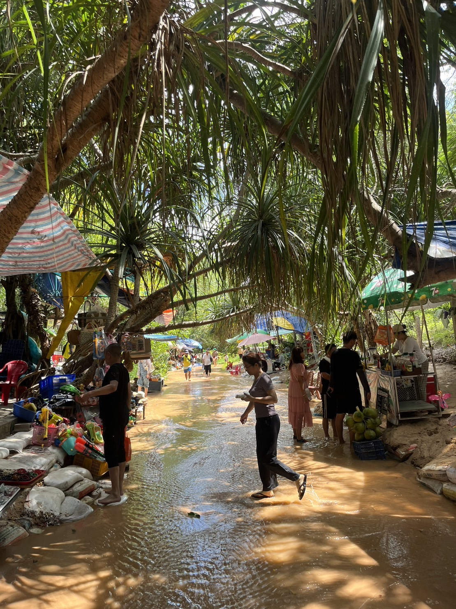
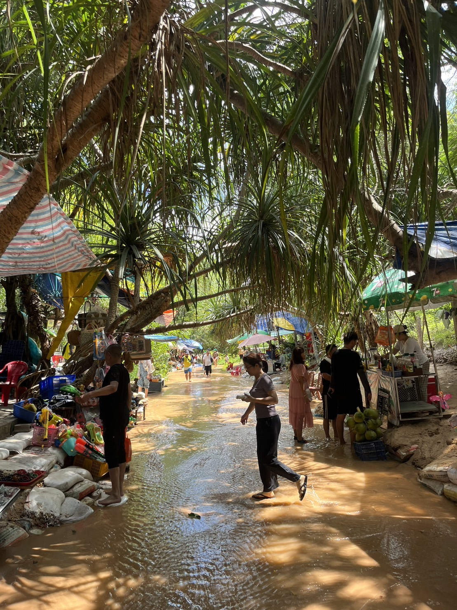

專業技能
95%
日文
75%
中文
70%
英文
日文
中文
英文
~2020年3月

我就讀的高中，玩耍時不分老師和同學，可以自由地享受樂趣，但學習時非常認真。 日本的高中分成理科和文科班，我在理科班，班級大約十人左右。 大家關係非常好，能互相教導，建立了非常親密的關係。 這是我難以忘懷的美好回憶。
2020年3月~2020年9月


我在中原大學的華語中心學習了大約半年的中文。 中文課程非常實踐，注重口語交流，收穫豐富。 最讓我印象深刻的是在台灣的活動中，班級一起舉辦活動的經驗。 在華語中心，不僅學習了中文，也同時了解了台灣的文化與習俗。 這段經歷讓我留下了美好的回憶。
2020年9月~2021年1月


大學剛入學時參與的小組作業。 那時，我對中文還不太了解，我感到非常困惑。 但是，小組成員支持我，教會了我許多東西，讓我能夠勉強應付。 那堂課上，我們學習了企業概念。 具體來說，我們去了一家商店，了解了產品的生產環境，以及為什麼銷售這款餅乾，生產者的想法等等，並且親身體驗了銷售該產品的過程。 透過這門課程，站在企業的角度銷售產品，思考商品等經驗讓我更深入了解企業經營。
2021年2月~2021年6月


這門課程是管理學的一部分，我們去圖書館了解了實際存放的書籍是如何管理的。 我們也以幫助整理書籍的形式參與了其中。 在那裡，我們學習了通常不太注意的書籍編號和整理方式，這讓我產生了濃厚的興趣。
2022年1月


在日本，因為20歲成為成年的法定年齡，因此會舉行成年儀式來慶祝。 只有已經滿20歲的人才能參加。 男性通常穿著西裝或袴，女性則穿著振袖。 這是與當地的朋友和老師再次相聚的機會，大家為慶祝成年而一起喝酒、享樂的儀式。
社團
Japanese-style baseball


這個團隊非常友善，大家能夠互相教導，是一個很棒的團隊。 雖然沒有照片，但在大部分比賽中都取得了勝利，是一支強大的團隊。 我雖然是第一次嘗試軟式棒球，但即使失敗，也能得到溫柔的鼓勵，這是一個非常溫暖的團隊。
Baseball


這個團隊是一支硬式棒球隊，我有大約十年的硬式棒球經驗，現在主要負責教練工作。 這支球隊是最近組成的，雖然只參加過幾場比賽，但大家都在努力提升自己，是個富有志向、優秀的團隊。
旅行
Japan


日本的冬天會下雪，有許多滑雪設施，我在日本的時候每年都會滑雪。 最近回到日本旅遊，久違的感覺。 日本的食物特別合我的口味，所有的料理都很美味。 來日本時一定要嘗試各種日本美食哦。
Philippines


這是我去菲律賓旅遊和學習語言時拍攝的照片。 在菲律賓，幾乎所有地方都能用英語交流，人們也非常熱情，我在那裡度過了一個月愉快的時光。 菲律賓菜餚中令我印象深刻的是一道名為「balut」的蛋類料理。 敢於嘗試的人可以試試看。
Vietnam

 

這是我去越南旅遊一週時拍攝的照片。 越南的食物特別美味，特別是越南菜的“pho”，非常好吃。 大家一定要去越南嚐嚐「pho」。
Malaysia


這是我在馬來西亞旅遊一周時拍攝的照片。 馬來西亞是一個多語言國家，有許多種語言被使用，這對我來說是全新的體驗。 而且，食物有很多和台灣相似的，非常美味。 特別是satay是我在馬來西亞最喜歡的食物，如果有機會，請務必去馬來西亞嚐嚐。